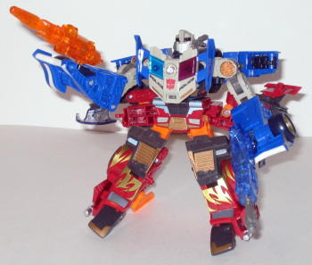
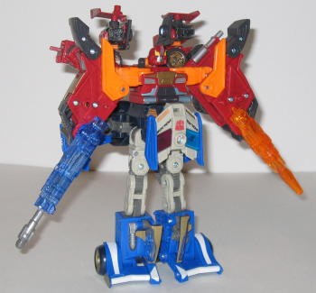

Prowl's vehicle mode
is some kind of futuristic race car/police car hybrid. It's got the general
(and I mean GENERAL) shape of a race car, but it has sirens on the back
fin, and "POLICE" is emblazoned on him in four different areas (along with
some Japanese writing, but I can't read it). I really don't like this mode-
his proportions are WAY off. He's too wide when compared to his length,
his window/driver's seat is far too small, and his back fin is way too
short, among other things. It just looks rather silly, really. One look
at him and you can tell how he transforms (similar to
Armada
Swindle
), and... I don't like that, especially on a deluxe-sized toy.
His gun also is mounted on him in a rather odd way in this mode- because
of the placement of the holes, it's basically attached to either one side
of the car or the other, instead of a more preferable centered position.
The robot head is also rather obvious on the backside of this mode. That's
not to say that Prowl has absolutely no positives in this mode, though-
it's just that they're far and few between. One good thing is the color
scheme- blue, gray, black, and gold with a few other accent colors makes
for a good Autobot scheme, and it's appropriate for a race/police car.
And although the mold detailing is lacking in some of the larger areas,
there's a few areas- like the gun- where it's pretty good. An especially
cool detail is that, when you roll Prowl along on the ground, you can see
painted mechanical detailing INSIDE his rear wheel! Prowl's silver Autobot
Powerlinx symbol is on the top left side of this mode, to the rear of the
"POLICE" emblem.
Prowl's robot mode is
almost laughable. His proportions are absolutely ludicrous. So much for
being even the slightest bit intimidating... Okay, where to start? His
chest sticks out so much it looks like he has to continually peer over
it, for one. His arms are a little on the small side, and have because
of their blocky proportions, they have noticeable gaps near the joints.
The large wheels on top of his shoulders also look a bit goofy, seeing
as how the arms aren't actually connected to his body, but rather, just
those huge horizontal shoulders. From any view except head-on, you can
easily see his legs go all the way up to his NECK. His feet are also a
little on the clonky side, although that's no different from most of the
other Energon Autobots. In addition, Prowl oddly has no Powerlinx ports
like his Autobot brethren, although he does have two Minicon ports on his
gun. On the plus side (and pretty much his ONLY plus side) is that Prowl
has rather good articulation in this mode- he can move at pretty much any
point except the waist, and his head movement is restricted a little. But
you can still get him into a fair number of poses.


Prowl's Powerlinx modes
are really his main selling point- they're actually some of the best out
of all the Energon Autobots. As the top half of a Powerlinx robot, Prowl
generally looks good, except for his overly large lower arms, which just
have flat fists on the top of them. The robot parts hanging behind his
back actually complement the mode rather than just look like kibble, and
his overall proportions and articulation are nice.
As the lower half of
a Powerlinx robot, Prowl still retains some pretty good proportions. The
robot extra stuff hanging off the back looks more like kibble in this configuration
than it does in the other mode, though. The pelvis does tend to stick out
a bit, but the chest plate can actually rotate upwards to cover the chest
of the upper Powerlinx robot. It's a very innovative feature, and it was
obviously meant to go this way, even though the instructions don't mention
it. As legs, Prowl also has pretty good articulation.
Prowl has some pretty nice Powerlinx modes, but that's not nearly enough to save this dismal figure, as BOTH of his individual modes are absolutely atrocious. Prowl's a perfect example of how a gimmick can completely ruin a toy. Not recommended unless you're a completist or you just really like the Powerlinking gimmick.
Review by Beastbot